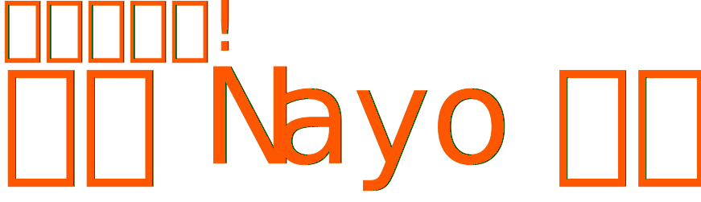
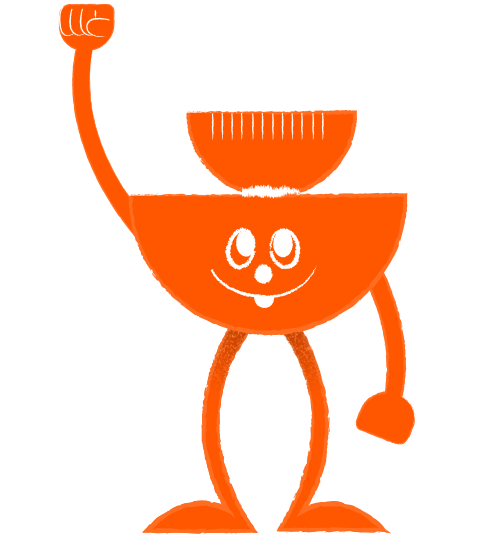
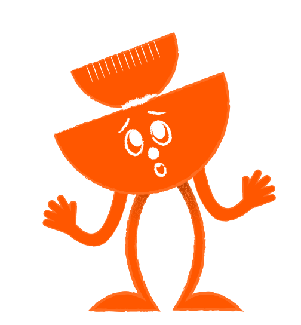
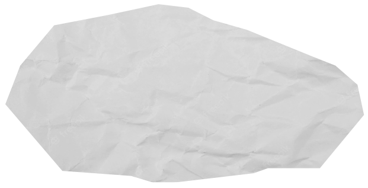

자신감 가득 Nayo
이 세상은 다 내꺼! 발표도, 반장선거도, 앞으로의 인생도 다 자신있어요!
도전하기 힘든 일이 있다면 저한테 맡겨도 좋아요.
제가 자신감이 되어드릴게요!
누군가에게 관심을 받는다는 건 정말 행복한 일이에요
그런데.. 무슨 일 있나요?
너는 여전히 당당하고 시끌벅적하구나!
지금의 나는 사람들 앞에만 서면 심장이 너무
빨리뛰고 아무말도 못하겠어.
아무래도 너와 함께있던 나와 달라진 것 같아.
실수해도 괜찮아요.
우리 계속 함께 도전해봐요!